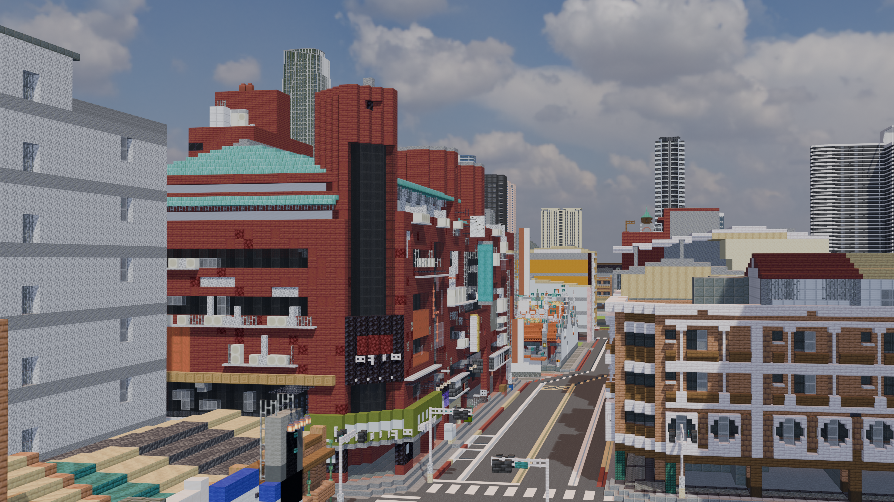
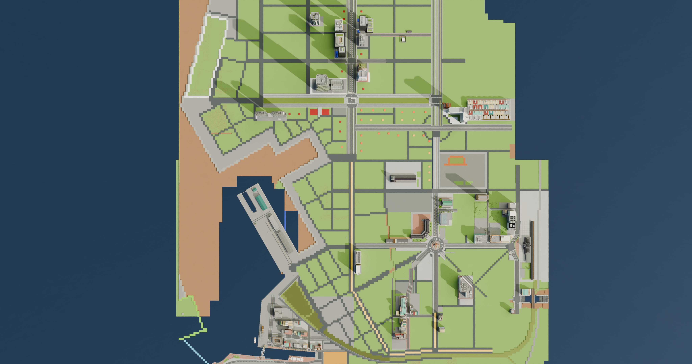
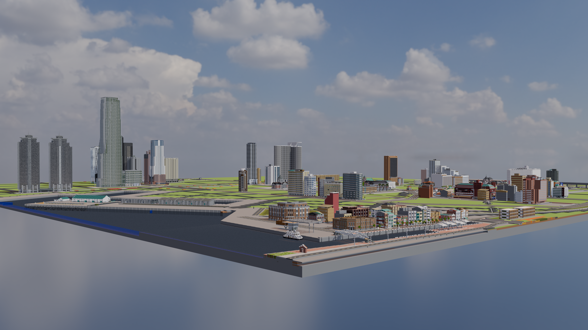

Commercial District / 商業區
戰後現代主義紅磚大樓與騎樓街屋
探討洗石子外牆、面磚退縮騎樓與頂樓違章加蓋在方塊尺度下的轉譯呈現。

以 Minecraft 為研究載體，探索戰後台灣建築類型、街道紋理與架空都市之邊界。

鯤鯓市的土地利用與路網結構，反映了臺灣沿海港市的歷史疊加過程。從左側有機交錯的舊城與鋸齒狀港口碼頭，到中軸線輻射狀的圓環幹道，再到北側與東側規整的大型方格重劃區，展現了由歷史自然發展轉向現代都市計畫的空間變遷。
探討洗石子外牆、面磚退縮騎樓與頂樓違章加蓋在方塊尺度下的轉譯呈現。

分析高層商業核心區至低密度臨港倉庫區之間的都市天際線階層與視野軸線。
從1944年千千岩助太郎與顏水龍參與的赤崁樓修復工程談起，梳理歷代系上老師與台南名勝古蹟之間鮮為人知的歷史交集與空間記憶……
1980年，成大將建築系從工學院拆分，與都計、工設兩系組成一個新學院，這時候「要去哪裡找地來給這個新學院使用呢？」就變成了一個問題……
當鐵皮與加建成為臺灣城鄉地景不可分割的一部分，如何在 Minecraft 中透過像素比例解構並重新呈現這種有機的自發性建築？